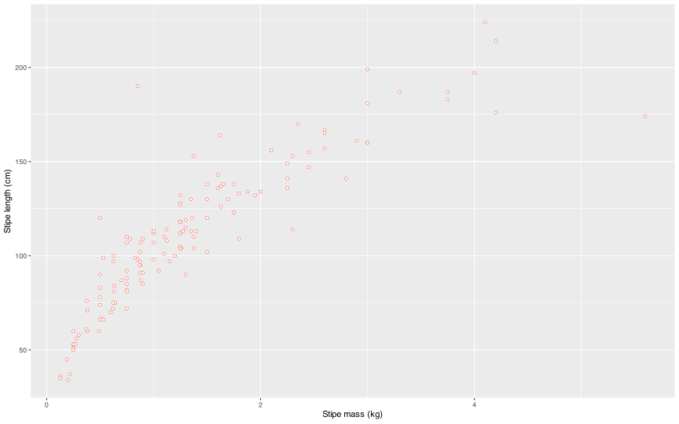
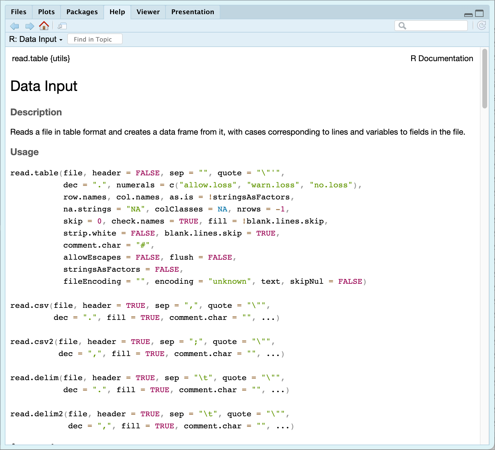

![]()
# Day_1.R
# Reads in some data about Laminaria collected along the Cape Peninsula
# Do various data manipulations, analyses and graphs
# <your_name>
# <curent_date>3. R workflows
Getting familiar with R and RStudio
“A dream doesn’t become reality through magic; it takes sweat, determination and hard work.”
— Colin Powell
“Choose a job you love, and you will never have to work a day in your life.”
— Confucius
Exercise in frustration
This exercise requires that you analyse the data provided in data/SACTN_SAWS.csv within <that which shall not be named>.
This dataset contains monthly seawater temperature time series for a selection of sites around the coast of South Africa.
- How many sites are there?
For each of the sites there are monthly mean temperatures for every year the 1970s to the 2000s.
What is the earliest and latest date for which temperature measurements are available, and which sites do they belong to?
In this exercise, please create, for each site, a monthly climatology using all available data in the time series.
WMO Guidelines for calculating climatologies
The World Meteorological Organization (WMO) provides guidelines for the calculation of climatologies, including monthly and annual climatologies. The WMO guidelines are based on standard meteorological practices and are designed to ensure consistent and accurate calculation of climatological data.
A monthly climatology is a study of the average temperature of seawater (or any environmental variable that is expected to vary over time in a cyclical seasonal manner) over a specified period of time, typically over a year, and broken down by month. Climatologies provide insight into the patterns and trends of weather phenomena and how they vary from one month to another and from year to year.
By analyzing long-term data, a monthly climatology can determine the average seawater temperature for each month, the range of temperatures that are typical for each month, as well as finding deviations from expected patterns. This information can be used for a variety of purposes, such as predicting weather patterns, studying the effects of climate change, or understanding the impacts of ocean temperature on marine life.
In essence, a monthly climatology provides a comprehensive and organised overview of the variability and patterns in seawater temperature over a given period of time.
The steps for calculating a monthly climatology according to the WMO guidelines are as follows:
Obtain long-term meteorological observations: The WMO recommends using at least 30 years of data, although longer periods are preferred, to ensure the climatology is representative of the long-term average conditions.
Group the observations into months: The observations should be grouped into months, such as January, February, etc.
Calculate the mean value for each month: For each month, the mean value should be calculated as the sum of all the observations for that month divided by the number of observations.
Calculate the mean climatology for each month: The mean climatology for each month is calculated by taking the mean of the monthly mean values for each month over the period of record.
Quality control and homogeneity adjustment: The WMO recommends checking the quality and consistency of the data, and adjusting the data if necessary to correct for inhomogeneities or biases.
The steps for calculating an annual climatology are similar, with the observations being grouped into years rather than months. The WMO guidelines also provide recommendations for the calculation of other types of climatologies, such as seasonal and daily climatologies.
It’s important to note that the WMO guidelines are not mandatory, but they are widely used and respected in the meteorological community as the standard for calculating climatologies.
For this exercise, you should also:
Plot the monthly climatology for each site as a line graph showing the mean temperature for each month.
Optionally, you could also calculate the standard deviation of the monthly mean temperatures to represent the variability in temperature within each month. This information can be used to determine the range of typical temperatures for each month.
1 R Scripts
The first step for any project in R is to create a new script. We do this by clicking on the ‘New Document’ button (in the top left and selecting ‘R Script’). This creates an unnamed file in the Source Editor pane. Best to save it first of all so we do not lose what we do. ‘File’/‘Save As’/ and the Working Directory should come up. Type in Day_1 as the file name and click ‘save.’ R will automatically add a .R extension.
It is recommended to start a script with some basic information for you to refer back to later. Start with a comment line (the line begins with a #) that tells you the name of the script, something about the script, who created it, and the date it was created. In the source editor enter to following lines and save the file again:
Remember that anything appearing after the # is not executed by R as script and is a comment.
It is recommend that for each workshop session you start a new script (in the Source Editor), type in the code as we go along, and only execute the required lines. That way you will have a record of what you have done.
Below we will learn how to import the file laminaria.csv into R, assign it to a dataframe named laminaria, and spend a while looking it over. These data reflect results of a sampling campaign on one of the species of kelps (Laminaria pallida) in the Western Cape designed to find the morphometric properties of populations at different sites. We visited 13 different locations along the Cape Peninsula (site), and at each site, collected ca. 13 specimens of the largest kelps we could find. We then brought the kelps back to the shore and measured/calculated nine morphometric properties of the plants (e.g. the mass of the fronds (blade_weight), the frond length (blade_length), etc.).
2 Reading data into R
We will now see how easy it is to read data into R. R will read in many types of data, including spreadsheets, text files, binary files and files from other statistical packages and software.
Full stops
Unfortunately in South Africa we are taught from a young age to use commas (,) instead of full stops (.) for decimal places. This simply will not do when we are working with a computer. You must always use a full stop for a decimal place and never insert commas anywhere into any numbers.
Commas
R generally thinks that commas mean the user is telling the computer to separate values. So if you think you are typing a big number like 2,300 you may actually end up with two numbers. Never use commas with numbers.
2.1 Preparing data for R
Importing data can actually take longer than the statistical analysis itself! In order to avoid as much frustration as possible it is important to remember that for R to be able to analyse your data they need to be in a consistent format, with each variable in a column and each sample in a row. The format within each variable (column) needs to be consistent and is commonly one of the following types: a continuous numeric variable (e.g., fish length (m): 0.133, 0.145); a factor or categorical variable (e.g., Month: Jan, Feb or 1, 2, …, 12); a nominal variable (e.g., algal colour: red, green, brown); or a logical variable (i.e., TRUE or FALSE). You can also use other more specific formats such as dates and times, and more general text formats.
We will learn more about working with data in R — specifically, we will teach you about the tidyverse principles and the distinction between long and wide format data in more detail on Day 4. For most of our work in R we require our data to be in the long format, but Excel users (poor things!) are more familiar with data stored in the wide format. For now let’s bring some data into R and not worry too much about the data being tidy.
2.2 Converting data
Before we can read in the Laminaria dataset provided for the following exercises, we need to convert the Excel file supplied into a .csv file. Open ‘laminaria.xlsx’ in Excel, then select ‘Save As’ from the File menu. In the ‘Format’ drop-down menu, select the option called ‘Comma Separated Values’, then hit ‘Save’. You’ll get a warning that formatting will be removed and that only one sheet will be exported; simply ‘Continue’. Your working directory should now contain a file called laminaria.csv.
2.3 Importing data
The easiest way to import data into R is by changing your working directory to be the same as the file path where the file(s) are you want to load. A file path is effectively an address. In most operating systems, if you open the folder where your files are you may click on the navigation bar and it will show you the complete file path. Many people develop the nasty habit of squirling away their files within folders within folders within folders within folders… within folders within folders. Please don’t do that.
The concept of file paths is either one that you are familiar with, or you’ve never heard of before. There tends to be little middle ground. Happily, RStudio allows us to circumvent this issue. We do this by using the Intro_R_Workshop.Rproj that you may find in the files downloaded for this workshop. If you have not already switched to the Intro_R_Workshop.Rproj as outlined in Chapter 2, click on the project button in the top right corner your RStudio window. Then navigate to where you saved Intro_R_Workshop.Rproj and select it. Notice that your RStudio has changed a bit and all of the objects you may have previously created in your environment have been removed and any tabs in the source editor pane have been closed. That is fine for now, but it may mean you need to re-open the Day_1.R script you just created.
Once we have the working directory set, either by doing it manually with setwd() or by loading a project, R will now know where to look for the files we want to read. The function read_csv() is the most convenient way to read in raw data. There are several other ways to read in data, but for the purposes of this workshop we’ll stick to this one, for now. To find out what it does, we will go to its help entry in the usual way (i.e. ?read_csv).
All R Help items are in the same format. A short Description (of what it does), Usage, Arguments (the different inputs it requires), Details (of what it does), Value (what it returns) and Examples. Arguments (the parameters that are passed to the function) are the lifeblood of any function, as this is how you provide information to R. You do not need to specify all arguments, as most have appropriate default values for your requirements, and others might not be needed for your particular case.
Data formats
R has pedantic requirements for naming variables. It is safest to not use spaces, special characters (e.g., commas, semicolons, any of the shift characters above the numbers), or function names (e.g., mean). One can use ‘camelCase’, such as myFirstVariable, or simply separate the ‘parts’ of the variable name using an underscore such as in my_first_variable. Always make sure to use meaningful names; eventually you will learn to find a balance between meaningfulness and something short that’s easy enough to retype repeatedly (although R’s ability to use tab completion helps with not having to type long names to often).
Import
read_csv() is simply a ‘wrapper’ (i.e., a command that modifies) a more basic command called read_delim(), which itself allows you to read in many types of files besides .csv. To find out more, type ?read_delim().
2.4 Loading a file
To load the laminaria.csv file we created, and assign it to an object name in R, we will use the read_csv() function from the tidyverse package, so let’s make sure it is activated.
Depending on the version of Excel you are using, or perhaps the settings within it, the ‘laminaria.csv’ file you created may be corrupted in different ways. Generally Excel likes to replace the , between columns in our .csv files with ;. This may seem like a triviality but sadly it is not. Lucky for use, the tidyverse knows about this problem and they have made a plan. Please open your ‘laminaria.csv’ file and look at which character is being used to separate columns. If it is , then we will load the data with read_csv(). If the columns are separated with ; we will use read_csv2().
If one clicks on the newly created laminaria object in the Environment pane it will open a new panel that shows the information as a spreadsheet. To go back to your script click the appropriate tab in the Source Editor pane. With these data loaded we may now perform analyses on them.
At any point when working in R, you can see exactly what objects are in memory in several ways. First, you can look at the Environment tab in RStudio, then Workspace Browser. Alternatively you can type either of the following:
You can delete an object from memory by specifying the rm() function with the name of the object:
rm(laminaria)This will of course delete our variable, so we will import it in again using whichever of the following two lines of code matched our Excel situation.
laminaria <- read.csv("../../data/laminaria.csv")
Managing variables
It is good practice to remove variables from memory that you are not using, especially if they are large.
3 Working with data
3.1 Examine your data
Once the data are in R, you need to check there are no glaring errors. It is useful to call up the first few lines of the dataframe using the function head(). Try it yourself by typing:
head(laminaria)| region | site | Ind | blade_weight | blade_length | blade_thickness | stipe_mass | stipe_length | stipe_diameter | digits | thallus_mass | total_length |
|---|---|---|---|---|---|---|---|---|---|---|---|
| WC | Kommetjie | 2 | 1.90 | 160 | 2.00 | 1.50 | 120 | 56.0 | 12 | 3000 | 256 |
| WC | Kommetjie | 3 | 1.50 | 120 | 1.40 | 2.25 | 149 | 68.5 | 12 | 3750 | 269 |
| WC | Kommetjie | 4 | 0.55 | 110 | 1.50 | 1.15 | 97 | 69.0 | 13 | 1700 | 207 |
| WC | Kommetjie | 5 | 1.00 | 159 | 1.50 | 2.60 | 167 | 60.0 | 8 | 3600 | 326 |
| WC | Kommetjie | 6 | 2.30 | 149 | 2.00 | NA | 146 | 73.0 | 15 | 5100 | 295 |
| WC | Kommetjie | 7 | 1.60 | 107 | 1.75 | 2.90 | 161 | 63.0 | 17 | 4500 | 268 |
This lists the first six lines of each of the variables in the dataframe as a table. You can similarly retrieve the last six lines of a dataframe by an identical call to the function tail(). Of course, this works better when you have fewer than 10 or so variables (columns); for larger data sets, things can get a little messy. If you want more or fewer rows in your head or tail, tell R how many rows it is you want by adding this information to your function call. Try typing:
head(laminaria, n = 3)| region | site | Ind | blade_weight | blade_length | blade_thickness | stipe_mass | stipe_length | stipe_diameter | digits | thallus_mass | total_length |
|---|---|---|---|---|---|---|---|---|---|---|---|
| WC | Kommetjie | 2 | 1.90 | 160 | 2.0 | 1.50 | 120 | 56.0 | 12 | 3000 | 256 |
| WC | Kommetjie | 3 | 1.50 | 120 | 1.4 | 2.25 | 149 | 68.5 | 12 | 3750 | 269 |
| WC | Kommetjie | 4 | 0.55 | 110 | 1.5 | 1.15 | 97 | 69.0 | 13 | 1700 | 207 |
tail(laminaria, n = 2)| region | site | Ind | blade_weight | blade_length | blade_thickness | stipe_mass | stipe_length | stipe_diameter | digits | thallus_mass | total_length |
|---|---|---|---|---|---|---|---|---|---|---|---|
| WC | Rocky Bank | 12 | 2.1 | 194 | 1.4 | 3.75 | 183 | 38.20 | 12 | 5850 | 377 |
| WC | Rocky Bank | 13 | 1.3 | 160 | 1.9 | 2.45 | 155 | 50.93 | 16 | 3550 | 297 |
You can also check the structure of your data by using the glimpse() function:
glimpse(laminaria)R> Rows: 140
R> Columns: 12
R> $ region <chr> "WC", "WC", "WC", "WC", "WC", "WC", "WC", "WC", "WC", …
R> $ site <chr> "Kommetjie", "Kommetjie", "Kommetjie", "Kommetjie", "K…
R> $ Ind <dbl> 2, 3, 4, 5, 6, 7, 8, 10, 11, 1, 3, 4, 5, 6, 7, 8, 9, 1…
R> $ blade_weight <dbl> 1.90, 1.50, 0.55, 1.00, 2.30, 1.60, 0.65, 0.95, 2.30, …
R> $ blade_length <dbl> 160, 120, 110, 159, 149, 107, 104, 111, 178, 145, 146,…
R> $ blade_thickness <dbl> 2.00, 1.40, 1.50, 1.50, 2.00, 1.75, 2.00, 1.25, 2.50, …
R> $ stipe_mass <dbl> 1.50, 2.25, 1.15, 2.60, NA, 2.90, 0.75, 1.60, 4.20, 0.…
R> $ stipe_length <dbl> 120, 149, 97, 167, 146, 161, 110, 136, 176, 82, 118, 1…
R> $ stipe_diameter <dbl> 56.0, 68.5, 69.0, 60.0, 73.0, 63.0, 51.0, 56.0, 76.0, …
R> $ digits <dbl> 12, 12, 13, 8, 15, 17, 11, 11, 8, 19, 20, 23, 20, 24, …
R> $ thallus_mass <dbl> 3000, 3750, 1700, 3600, 5100, 4500, 1400, 2550, 6500, …
R> $ total_length <dbl> 256, 269, 207, 326, 295, 268, 214, 247, 354, 227, 264,…This very handy function lists the variables in your dataframe by name, tells you what sorts of data are contained in each variable (e.g., continuous number, discrete factor) and provides an indication of the actual contents of each.
If we wanted only the names of the variables (columns) in the dataframe, we could use:
names(laminaria)R> [1] "region" "site" "Ind" "blade_weight"
R> [5] "blade_length" "blade_thickness" "stipe_mass" "stipe_length"
R> [9] "stipe_diameter" "digits" "thallus_mass" "total_length"Another option, but by no means the only one remaining, is to install a library called skimr and to use thew skim() function:
| Name | iris |
| Number of rows | 150 |
| Number of columns | 5 |
| _______________________ | |
| Column type frequency: | |
| factor | 1 |
| numeric | 4 |
| ________________________ | |
| Group variables | None |
Variable type: factor
| skim_variable | n_missing | complete_rate | ordered | n_unique | top_counts |
|---|---|---|---|---|---|
| Species | 0 | 1 | FALSE | 3 | set: 50, ver: 50, vir: 50 |
Variable type: numeric
| skim_variable | n_missing | complete_rate | mean | sd | p0 | p25 | p50 | p75 | p100 | hist |
|---|---|---|---|---|---|---|---|---|---|---|
| Sepal.Length | 0 | 1 | 5.84 | 0.83 | 4.3 | 5.1 | 5.80 | 6.4 | 7.9 | ▆▇▇▅▂ |
| Sepal.Width | 0 | 1 | 3.06 | 0.44 | 2.0 | 2.8 | 3.00 | 3.3 | 4.4 | ▁▆▇▂▁ |
| Petal.Length | 0 | 1 | 3.76 | 1.77 | 1.0 | 1.6 | 4.35 | 5.1 | 6.9 | ▇▁▆▇▂ |
| Petal.Width | 0 | 1 | 1.20 | 0.76 | 0.1 | 0.3 | 1.30 | 1.8 | 2.5 | ▇▁▇▅▃ |
3.2 Tidyverse sneak peek
Before we begin to manipulate our data further we need to briefly introduce ourselves to the tidyverse. And no introduction can be complete within learning about the pipe command, %>%. We may type this by pushing the following keys together: ctrl-shift-m. The pipe (%>%) allows us to perform calculations sequentially, which helps us to avoid making errors.
The pipe works best in tandem with the following five common functions:
- Arrange observations (rows) with
arrange()
- Filter observations (rows) with
filter()
- Select variables (columns) with
select()
- Create new variables (columns) with
mutate()
- Summarise variables (columns) with
summarise()
We will cover these functions in more detail on Day 4. For now we will ease ourselves into the code with some simple examples.
3.3 Subsetting
Now let’s have a look at specific parts of the data. You will likely need to do this in almost every script you write. If we want to refer to a variable, we specify the dataframe then the column name within the select() function. In your script type:
If we want to only select values from specific columns we insert one more line of code.
If we wanted to select only the rows of data belonging to the Kommetjie site, we could type:
The function filter() has two arguments: the first is a dataframe (we specify laminaria in the previous line and the pipe supplies this for us) and the second is an expression that relates to which rows of a particular variable we want to include. Here we include all rows for Kommetjie and we find that in the variable site. It returns a subset that is actually a dataframe itself; it is in the same form as the original dataframe. We could assign that subset of the full dataframe to a new dataframe if we wanted to.
Task B
- In the script you have started, create a new named dataframe containing only kelps from two of the sites. Check that the new dataframe has the correct values in it. What purpose can the naming of a newly-created dataframe serve?
3.4 Basic stats
Straight out of the box it is possible in R to perform a broad range of statistical calculations on a dataframe. If we wanted to know how many samples we have at Kommetjie, we simply type the following:
Or, if we want to select only the row with the greatest total length:
Task B
- Using pipes, subset the Laminaria data to include regions where the blade thickness is thicker than 5 cm and retain only the columns site, region, blade weight and blade thickness. Now exit RStudio. Pretend it is three days later and revisit your analysis. Calculate the number of entries at Kommetjie and find the row with the greatest length. Do this now.
Imagine doing this daily as our analysis grows in complexity. It will very soon become quite repetitive if each day you had to retype all these lines of code. And now, six weeks into the research and attendant statistical analysis, you discover that there were some mistakes and some of the raw data were incorrect. Now everything would have to be repeated by retyping it at the command prompt. Or worse still (and bad for repetitive strain injury) doing all of it in SPSS and remembering which buttons to click and then re-clicking them. A pain. Let’s avoid that altogether and do it the right way by writing an R script to automate and annotate all of this.
Dealing with missing data
The .csv file format is usually the most robust for reading data into R. Where you have missing data (blanks), the .csv format separates these by commas. However, there can be problems with blanks if you read in a space-delimited format file. If you are having trouble reading in missing data as blanks, try replacing them in your spreadsheet with NA, the missing data code in R. In Excel, highlight the area of the spreadsheet that includes all the cells you need to fill with NA. Do an Edit/Replace… and leave the ‘Find what:’ textbox blank and in the ‘Replace with:’ textbox enter NA, the missing value code. Once imported into R, the NA values will be recognised as missing data.
So far we have calculated the mean and standard deviation of some data in the Laminaria data set. If you have not, please append those lines of code to the end of your script. You can run individual lines of code by highlighting them and pressing ctrl-Enter (cmd-Enter on a Mac). Do this.
Your file will now look similar to this one, but of course you will have added your own notes and comments as you went along:
# Day_1.R
# Reads in some data about Laminaria collected along the Cape Peninsula
# do various data manipulations, analyses and graphs
# AJ Smit
# 9 January 2020
# Find the current working directory (it will be correct if a project was
# created as instructed earlier)
getwd()
# If the directory is wrong because you chose not to use an Rworkspace (project),
# set your directory manually to where the script will be saved and where the data
# are located
# setwd("<insert_path_here>")
# Load libraries
library(tidyverse)
# Load the data
laminaria <- read_csv("../../data/laminaria.csv")
# Examine the data
head(laminaria, 5) # First five lines
tail(laminaria, 2) # Last two lines
glimpse(laminaria) # A more thorough summary
names(laminaria) # THe names of the columns
# Subsetting data
laminaria %>% # Tell R which dataframe to use
select(site, total_length) %>% # Select specific columns
slice(56:78) # Select specific rows
# How many data points do we have at Kommetjie?
laminaria %>%
filter(site == "Kommetjie") %>%
nrow()
# The row with the greatest length
laminaria %>% # Tell R which dataset to use
filter(total_length == max(total_length)) # Select row with max total lengthMaking sure all the latest edits in your R script have been saved, close your R session. Pretend this is now 2019 and you need to revisit the analysis. Open the file you created in 2017 in RStudio. All you need to do now is highlight the file’s entire contents and hit ctrl-Enter.
Stick with
.csv files
There are packages in R to read in Excel spreadsheets (e.g., .xlsx), but remember there are likely to be problems reading in formulae, graphs, macros and multiple worksheets. We recommend exporting data deliberately to .csv files (which are also commonly used in other programs). This not only avoids complications, but also allows you to unambiguously identify the data you based your analysis on. This last statement should give you the hint that it is good practice to name your .csv slightly differently each time you export it from Excel, perhaps by appending a reference to the date it was exported.
Remember…
Friends don’t let friends use Excel.
4 Summary of all variables in a dataframe
Import the data into a dataframe called laminaria once more (if it isn’t already in your Environment), and check that it is in order. Once we’re happy that the data have imported correctly, and that we know what the variables are called and what sorts of data they contain, we can dig a little deeper. Try typing:
summary(laminaria)The output is quite informative. It tabulates variables by name, and for each provides summary statistics. For continuous variables, the name, minimum, maximum, first, second (median) and third quartiles, and the mean are provided. For factors (categorical variables), a list of the levels of the factor and the count of each level are given. In either case, the last line of the table indicates how many NAs are contained in the variable. The function summary() is useful to remember as it can be applied to many different R objects (e.g., variables, dataframes, models, arrays, etc.) and will give you a summary of that object. We will use it liberally throughout the workshop.
4.1 Summary statistics by variable
This is all very convenient, but we may want to ask R specifically for just the mean of a particular variable. In this case, we simply need to tell R which summary statistic we are interested in, and to specify the variable to apply it to using summarise(). Try typing:
Or, if we wanted to know the mean and standard deviation for the total lengths of all the plants across all sites, do:
Of course, the mean and standard deviation are not the only summary statistic that R can calculate. Try max(), min(), median(), range(), sd() and var(). Do they return the values you expected? Now try:
The answer probably isn’t what you would expect. Why not? Sometimes, you need to tell R how you want it to deal with missing data. In this case, you have NAs in the named variable, and R takes the cautious approach of giving you the answer of NA, meaning that there are missing values here. This may not seem useful, but as the programmer, you can tell R to respond differently, and it will. Simply append an argument to your function call, and you will get a different response. Type:
The na.rm argument tells R to remove (or more correctly ‘strip’) NAs from the data string before calculating the mean. It now returns the correct answer. Although needing to deal explicitly with missing values in this way can be a bit painful, it does make you more aware of missing data, what the analyses in R are doing, and makes you decide explicitly how you will treat missing data.
4.2 More complex calculations
Let’s say you want to calculate something that is not standard in R, say the standard error of the mean for a variable, rather than just the corresponding standard deviation. How can this be done?
The trick is to remember that R is a calculator, so we can use it to do maths, even complex maths (which we won’t do). The formula for standard error is:
\[se = \frac{var}{\sqrt{n}}\]
We know that the variance is given by var(), so all we need to do is figure out how to get n and calculate a square root. The simplest way to determine the number of elements in a variable is a call to the function nrow(), as we saw previously. We may therefore calculate standard error with one chunk of code, step by step, using the pipe. Furthermore, by using group_by() we may calculate the standard error for all sites in one go.
When calculating the mean, we specified that R should strip the NAs, using the argument na.rm = TRUE. In the example above, we didn’t have NAs in the variable of interest. What happens if we do?
Unfortunately, the call to the function nrow() has no arguments telling R how to treat NAs; instead, they are simply treated as elements of the variable and are therefore counted. The easiest way to resolve this problem is to strip out NAs in advance of any calculations. Try typing:
then:
You will notice that the function na.omit() removes NAs from the variable that is specified as its argument.
Task B
Using this new information, calculate the mean stipe mass and the corresponding standard error.
Create a new data frame from the laminaria dataset that meets the following criteria: contains only the site column and a new column called total_length_half containing values that are half of the total_length. In this total_length_half column, there are no NAs and all values are less than 100. Hint: think about how the commands should be ordered to produce this data frame!
Use
group_by()andsummarise()to find the mean, min, and max blade_length for each site. Also add the number of observations (hint: see?n).What was the heaviest stipe measured in each site? Return the columns
site,region, andstipe_length.
5 Saving data
A major advantage of R over many other statistics packages is that you can generate exactly the same answers time and time again by simply re-running saved code. However, there are times when you will want to output data to a file that can be read by a spreadsheet program such as Excel (but try not to… please). The simplest general format is .csv (comma-separated values). This format is easily read by Excel, and also by many other software programs. To output a .csv type:
write_csv(site_by_region, path = "../../data/kelp_summary.csv")The first argument is simply the name of an object in R, in this case our table (a data object of class table) of counts by region and site (other sorts of data are available, so play around to see what can be done). The second argument is the name of the file you want to write to. This file will always be written to your working directory, unless otherwise specified by including a different path in the file name. Remember that file names need to be within quotation marks. The resultant file can sadly be opened in Excel.
6 Visualisations
R has powerful and flexible graphics capabilities. In this Workshop we will not use the traditional graphics (i.e. base graphics in the graphics package automatically loaded in R). We will instead use a package called ggplot2 that has the ability for extensive customisation (see the examples at the beginning of tomorrow’s section), so it will cover most of the graphs that you will want to produce. We will spend the next two days working on our ggplot2 skills. Here is a quick example of a ggplot2 graphic made from two of the kelp variables to show the relationship between them:
ggplot(data = laminaria, aes(x = stipe_mass, y = stipe_length)) +
geom_point(shape = 21, colour = "salmon", fill = "white") +
labs(x = "Stipe mass (kg)", y = "Stipe length (cm)")
7 Clearing the memory
You will be left with many objects after working through these examples. Note that in RStudio when you quit it can save the Environment if you choose, and so it can retain the objects in memory when you start RStudio again. The choice to save the objects resulting from an R Session until next time can be selected in the Global Options menu (‘Tools’ > ‘Global Options’ > ‘General’ > ‘Save workspace to .RData on exit’). Personally, we never save objects as it is preferable to start on a clean slate when one opens RStudio. Either way, to avoid long load times and clogged memory, it is good practice to clear the objects in memory every now and then unless you can think of a compelling reason not to. This may be done by clicking on the broom icon at the top of the Environment pane.
Of course, you could remove an individual object by placing only its name within the brackets of rm(). Do not use this line of code carelessly in the middle of your script; doing so will mean that you have to go back and regenerate the objects you accidentally removed – this is more of a nuisance than a train smash, especially for long, complicated scripts, as you will have (I hope!) saved the R script from which the objects in memory can be regenerated at any time.
8 Working directories
At the beginning of this session we glossed over this topic by setting the working directory via RStudio’s project functionality. This concept is however critically important to understand so we must now cover it in more detail. The current working directory, where R will read and write files, is displayed by RStudio within the title region of the Console. There are a number of ways to change the current working directory:
Select ‘Session’/‘Set Working Directory’ and then choose from the four options for how to set your working directory depending on your preference
From within the Files pane, navigate to the directory you want to set as the working directory and then select ‘More’/‘Set As Working Directory’ menu item (navigation within the Files pane alone will not change the working directory)
Use
setwd(), providing the name of your desired working directory as a character string
In the Files tab, use the directory structure to navigate to the Intro R Workshop directory… this will differ from person to person. Then under ‘More’, select the small upside down (drill-down) triangle and select ‘Set As Working Directory’. This means that whenever you read or write a file it will always be working in that directory. This gives us the code for setting the directory (below is the code that I would enter in the Console on my computer):
setwd("~/Intro_R_Workshop")It will be different for you, but copy it into your script and make a note for future reference.
Working directories
For Windows users, if you copy from a file path the slashes will be the wrong way around and must be changed!
You can check that R got this right by typing into the Console:
getwd()
Organising R projects
For every R project, set up a separate directory that includes the scripts, data files and outputs.
9 Help
The help files in R are not readily clear. It requires a bit of work to understand them well, but it is effort worth spending. There is method however to what appears to be madness. Soon you’ll grasp how sensible they really are. The figure below shows the beginning of a help file for a function in R. Please type ?read.table() in your console now to bring up this help file in your RStudio GUI.

The first thing we see at the top of the help file in small font is the name of the function, and the package it comes from in curly braces. After this, in very large text, is a very short description of what the function is used for. After this is the ‘Description’ section, which gives a sentence or two more fully explaining the use(s) of the function. The ‘Usage’ then shows all of the arguments that may be given to the function, and what their default settings are. When we write a function in our script we do not need to include all of the possible arguments. The help file shows us all of them so that we know what our options are. In some cases a help file will show the usage of several different functions together. This is done, as is the case here, if these functions forma a sort of ‘family’ and share many common purposes. The ‘Arguments’ section gives a long explanation for what each individual argument may do. The Arguments section here is particularly verbose. Up next is the ‘Details’ section that gives a more in depth description of what the function does. The ‘Value’ section tells us what sort of output we may expect from the function. Some of the more well documented functions, such as this one, will have additional sections that are not a requirement for function documentation. In this case the ‘Memory usage’ and ‘Note’ sections are not things one should always expect to see in help files. Also not always present is a ‘References’ section. Should there be actual published documentation for the function, or the function has been used in a publication for some other purpose, these references tend to be listed here. There are many functions in the vegan package that have been used in dozens of publications. If there is additional reading relevant to the function in question, the authors may also have included a ‘See also’ section, but this is not standard. Lastly, any well documented function should end with an ‘Examples’ section. The code is this section is designed to be able to be copy-pasted directly from the help file into the users R script or console and run as is. It is perhaps a bad habit, but when I am looking up a help file for a function, I tend to look first at the Examples section. And only if I can’t solve my problem with the examples do I actually read the documentation.
10 Other data
Many of the R packages that can be installed come with additional datasets that are available for you to use. They can easily be loaded into the workspace, but the trick is finding them first. This presentation shows how to go about doing this, and it focuses in on a few of interesting ones you can use to practice your R skills on. Please explore them – in fact, many exercises in the workshop will require that you find some of you ‘own’ datasets and use them to demonstrate your understanding of important concepts.
11 R Markdown
You are now familiar with some basic R commands and can load data and perhaps even make a simple graphic. For this module, I want you to write your homework assignments in R Markdown instead of MS Word. RStudio (the company) has a helpful tutorial and a short video about R Markdown. After you have watched the video and read the material, go through these short lessons:
For basic understanding of R Markdown, familiarise yourself with the above material. For more depth, please also consult the additional heading items in the menu of the left of these pages.
You’ll need to install a couple more R packages before embarking on the R Markdown tutorials. Use RStudio’s Packages panel to install rmarkdown and viridis. Alternatively, paste these commands in the RStudio Console: install.packages("rmarkdown") and install.packages("viridis"). You can also type install.packages(c("rmarkdown", "viridis")) to install both at the same time.
Don’t worry if you don’t completely understand R Markdown! We’ll go over it at the beginning of class tomorrow if you have any questions.
In this module I encourage you to set the R Markdown output to either html (preferred) or MS Word. Getting it to compile to PDF takes a bit more effort, and the installation of LaTeX – this opens a can of worms, and except for the most geeky persons amongst you (an admirable attribute!), I won’t actively encourage going down this path (for now).
Speaking of .html output: when you create a new R Markdown document (in the menu, go to ‘File’ > ‘New File’ > ‘R Markdown’) and select the ‘From Template’ option in the resultant dialog box, you’ll be offered some interesting and useful templates for your ‘knitted’ final output. Play around with all or some of these, and to spice things up, submit your various assignments using different templates from day to day.
Task B
- Recreate the Exercise in frustration in R. Repeat all the step, but you are welcome to omit making figures of the montly climatologies.
Submission instructions
Submit a R script wherein you provide answers to the Task questions by no later than 8:00 tomorrow.
Provide a neat and thoroughly annotated and labelled Rmarkdown file which outlines the graphs and all calculations (as necessary).
Please label the Rmarkdown and resulting HTML files as follows:
BCB744_<first_name>_<last_name>_Task_B.Rmd, andBCB744_<first_name>_<last_name>_Task_B.html
(the < and > must be omitted as they are used in the example as field indicators only).
Failing to follow these instructions carefully, precisely, and thoroughly will cause you to lose marks, which could cause a significant drop in your score as formatting counts for 15% of the final mark (out of 100%).
Submit your Tasks on iKamva when ready.
12 Session info
installed.packages()[names(sessionInfo()$otherPkgs), "Version"]R> skimr lubridate forcats stringr dplyr purrr readr tidyr
R> "2.1.5" "1.9.2" "1.0.0" "1.5.0" "1.1.0" "1.0.1" "2.1.4" "1.3.0"
R> tibble ggplot2 tidyverse
R> "3.1.8" "3.4.1" "2.0.0"Reuse
Citation
BibTeX citation:
@online{smit2021,
author = {Smit, AJ},
title = {3. {R} Workflows},
date = {2021-01-01},
url = {https://tangledbank.netlify.app/BCB744/intro_r/03-workflow.html},
langid = {en}
}
For attribution, please cite this work as:
Smit A (2021) 3. R workflows. https://tangledbank.netlify.app/BCB744/intro_r/03-workflow.html.